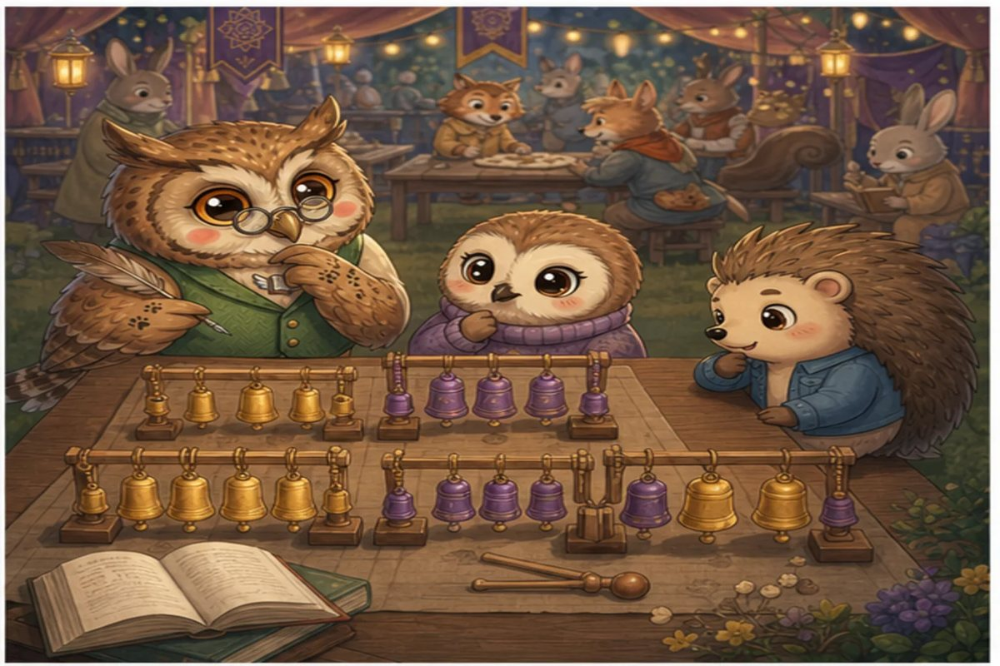
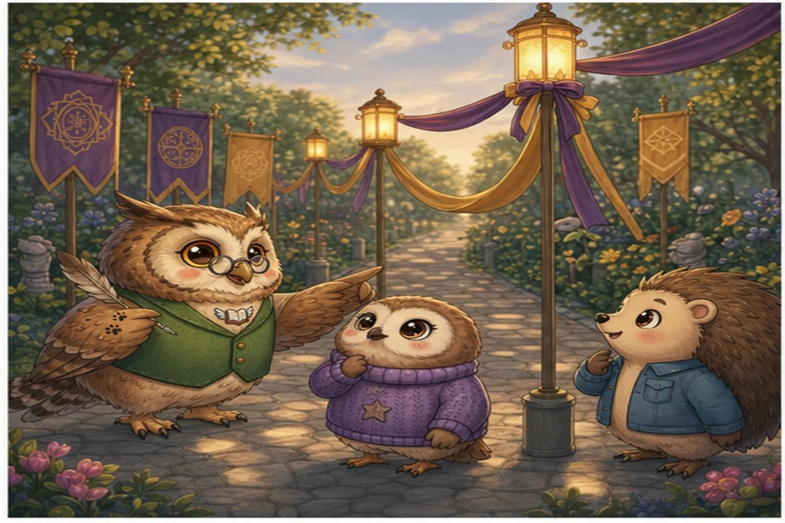
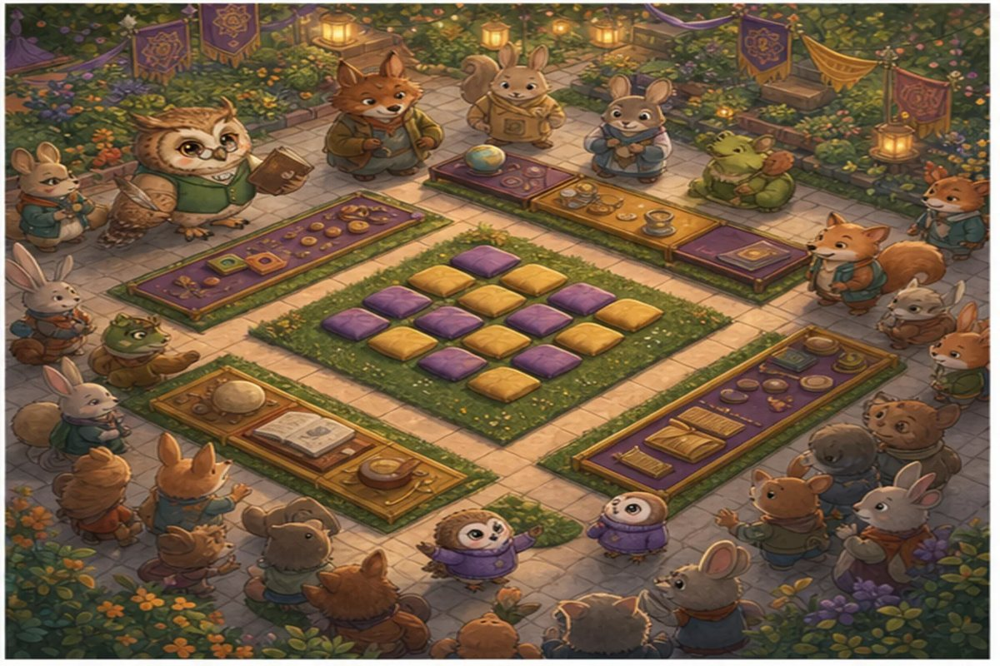

Wise Owl hangs 24 lantern flags for the reading festival. Booklava tries one long row, but the tall gateposts hide half the display. Quill-Berry suggests testing equal rectangles until every visitor can see.
Try it: If the 24 flags hang in 4 equal rows, how many flags go in each row?
5
6
7
9
Show the answer
6. Four rows of 6 make 4 × 6 = 24. So 4 and 6 are a factor pair of 24.

Page 2 of 4 · The Prime Chime
Four boxes of chimes are labelled 21, 23, 25 and 27. Booklava wants to hang each box in equal rows, with more than one row and more than one chime in every row. One box will not share out that way: its chimes only hang as one long row. That box holds a prime number of chimes.
Try it: Which number is prime?
21
23
25
27
Show the answer
23. Twenty-three has exactly two factors, 1 and 23, so its chimes only make 1 row of 23. The others can be shared out: 21 = 3 × 7, 25 = 5 × 5 and 27 = 3 × 9.

Page 3 of 4 · When the Ribbons Meet
Booklava ties a purple ribbon every fourth flag. Quill-Berry ties a gold ribbon every sixth flag. Wise Owl asks them to find the first place after the starting post where both colours will meet.
Try it: What is the first common multiple of 4 and 6 after zero?
8
10
12
24
Show the answer
12. Multiples of 4 are 4, 8, 12... and multiples of 6 are 6, 12... The first match is 12.

Page 4 of 4 · The Square Reading Garden
For the centre of the festival, 16 purple and gold cushions must form a perfect square, with clear paths on every side. Booklava smiles: the earlier rectangles were not mistakes, just different factor pairs. The final festival celebrates every elegant solution.
Try it: How many cushions belong in each row of a square made from 16 cushions?
4
5
6
8
Show the answer
4. A square has the same number of rows and columns. Since 4 × 4 = 16, each row has 4 cushions. That makes 16 a square number.
The end · Great maths
Four questions, one story.
Try the story again without peeking, or print it and work the questions on paper. SnackPack Basic Math has the rest of the story shelf, daily practice and number games.